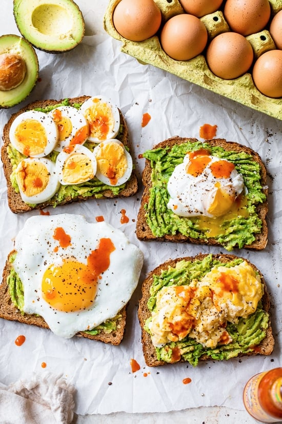

I love avocado toast, and if you add an egg to it you have a full meal. Sometimes I use balsamic vinegar to flavor the avocado instead of the lemon juice. You can make the egg any way you like, but I like it best fried or poached.
I’ve been obsessed with avo toast for breakfast, especially when I have avocados in my fridge that need to be used up. It’s a simple, healthy breakfast when you need something delicious and fast. I also got Tommy and Karina on board, we all love avocado toast!!
Adding egg to avocado toast is an easy way to add protein to breakfast toast. If you want a vegan option, you might also like this avocado toast with lemon and kale.
Ingredients
- 1 teaspoon butter
- 2 eggs
- 2 slices multigrain bread
- 1 ripe avocado, pitted, peeled
- 1 teaspoon lemon juice, or to taste
- 1 pinch cayenne pepper
- ground black pepper to taste
Steps
- Melt butter in a skillet over medium-low heat. Crack eggs into the skillet side by side and cook until eggs are white on the bottom layer and firm enough to flip, 2 to 3 minutes. Flip eggs, trying not to crack the yolk, and cook until egg reaches desired doneness, 2 to 5 minutes more.
- Meanwhile, toast bread slices to desired doneness, 3 to 5 minutes.
- Mash avocado in a bowl; stir in lemon juice, cayenne pepper, and sea salt. Spread avocado mixture onto toast. Top with fried egg and season with sea salt and pepper.